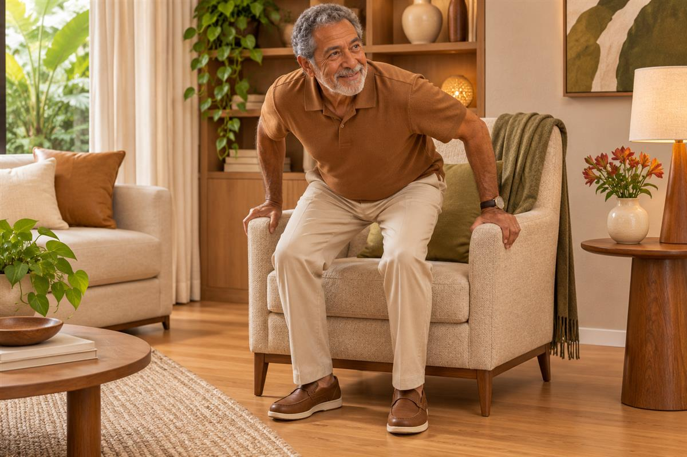

Plenus Espaços
A casa que acompanha você
Uma proposta de mobiliário acolhedor, elegante e pensado em torno dos movimentos do dia a dia.
Escolhas feitas com quem usa
O projeto começa com hábitos, medidas e preferências. A partir daí é possível discutir altura, alcance, firmeza, circulação, materiais e acabamentos.

O que conferir na proposta
Peça a descrição dos materiais, dimensões finais, limites de carga, prazo, instalação, garantia e assistência pós-venda. Registre também as opções de acabamento e os ajustes acordados.
Preparar meu projeto